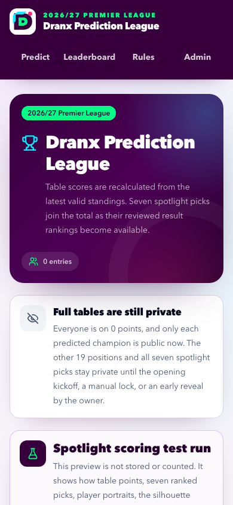

Quality assurance
Evidence date: 2026-08-08. This document records the newest completed local verification for the owner-provided club badge iteration and the latest completed production evidence from the preceding Gameweek 1 release. Badge-specific production verification runs only after GitHub main contains the PNG files and the idempotent seed updates the 20 production asset paths. Prior-release write and cleanup evidence is retained below as intentional history.
Current results
| Gate | Command or environment | Result |
|---|---|---|
| Formatting | npm run format:check |
Passed; rerun after final Markdown/HTML generation. |
| ESLint | npm run lint |
Passed with zero warnings. |
| TypeScript | npm run typecheck |
Passed in strict mode after Next route-type generation. |
| Unit/component/default suite | npm test |
115 passed; 10 database cases skipped by their explicit opt-in guard. |
| Isolated Neon integration | npm run test:integration |
10 passed against pl_predictions_test through the fail-closed test-database wrapper. |
| Restricted-local production build | npm run build:verify |
Passed using Next.js Webpack mode. |
| Browser journeys | npm run test:e2e |
8 passed with 22 intentional project-routing skips across deterministic pre/post-kickoff phases, desktop Chromium, 320/390/430-pixel Chromium, and iPhone 13 WebKit. |
| Local club badge rendering | headed Chromium plus strengthened browser test | All 20 club marks loaded from .png sources through Next image optimization with 200 responses; zero console warnings/errors, legible varied shapes, and no horizontal overflow at the narrow inspected viewport. |
| Complete local chain | CI=1 npm run check |
Passed after final documentation generation: parity, formatting, lint, strict types, 115 default tests, 10 isolated integration tests, Webpack build, and both browser phases. |
| Production dependency audit | npm audit --omit=dev --audit-level=high |
0 vulnerabilities. |
| Full dependency audit | npm audit --audit-level=high |
4 moderate, 0 high, 0 critical. All four are development-only legacy esbuild paths through drizzle-kit; the proposed force fix would downgrade/break the selected Drizzle toolchain, so no force change was applied. |
| Retained preview protection | retained preview URL | Anonymous request returns 302 to Vercel SSO after the owner-approved preview protection change. |
| Vercel production build | deployment dpl_4UEPWvwSECSwCHMUvLpacwmNjo1t |
Ready with target production for GitHub merge 65841c8; Vercel built the application with Next.js 16.3.0 and Turbopack. The stable public alias was repointed and returned 200. |
| Anonymous production smoke | npm run test:production-smoke |
5 passed against the stable alias across desktop Chromium, mobile Chromium at 390 pixels, exact 320/430-pixel reflow projects, and mobile WebKit, with no browser, page, unexpected same-origin request, or HTTP errors. |
| Bounded production write smoke | npm run test:production-write-smoke |
Not run for this timing/leaderboard iteration. Historical prior-release evidence: 1 passed with an exact QA submit/privacy/delete journey and exact cleanup. |
| Production data mutation | reviewed forward migration only | Migration 0002 is applied; kickoff is 2026-08-21T19:00:00.000Z, the optional earlier deadline is null, and the season remains unlocked and unrevealed. No participant or standings write smoke ran. |
| Vercel runtime logs | final deployment, preceding 15 minutes | Zero error entries and zero HTTP 500 responses. |
The local sandbox did not permit a default Turbopack CSS helper to bind its internal port, so the local production gate used next build --webpack. This was an execution-environment restriction, not an application compile error; Vercel deployment dpl_4UEPWvwSECSwCHMUvLpacwmNjo1t subsequently passed the Next.js 16.3.0 Turbopack production build.
Unit and component coverage
The 115-test default run covers:
- every required mutually exclusive scoring example, the top/bottom-half boundary, a 100-point exact table, kickoff and zero-match preseason suppression, and shared ranks;
- NFKC name normalization, length checks, duplicate/missing/out-of-season team validation, and unique positions;
- the exact verified 20-club fixture, display sorting, canonical PNG mark paths, existence of every referenced local file, and factual external mappings;
- original Dranx header/footer language plus
TeamMarkcontain sizing, accessible club-mark semantics, and labelled initials fallback after an image error; - pointer/keyboard sorter structure, 56-pixel handle-only touch targets, live language for predicted versus actual positions, A–Z reset, review, server rejection, sticky safe-area action, mobile navigation, and narrow-card shrink behavior;
- the official Arsenal v Coventry opening instant, season-scoped rollover behavior, null automatic-deadline sentinel, explicit-timezone parsing, fail-closed isolated test clock, database-clock policy, manual lock, and irreversible early reveal;
- champion-pick cards before scoring, 1st-place on-track status, non-1st off-track ordinals, and the local mark fallback;
- complete snapshot validation and source-failure envelopes;
- canonical hashing, future-skew rejection, duplicate watermark semantics, historical-content reactivation, initial/changed active-pointer guards, source-finality isolation, and import/finalize races;
- 38-game final-candidate requirements plus compare-and-swap finalization and undo;
- constant-time administrator credential verification, signed-session nonce/expiry/tamper handling, cookie attributes, origin checks, mutation authorization, rotation invalidation, and bounded request IDs.
Database integration
npm run test:integration loaded .env.local, routed through scripts/run-with-test-database.mjs, and passed ten cases against the isolated pl_predictions_test database:
- one prediction and exactly 20 items are created atomically;
- case-insensitive participant uniqueness is enforced by PostgreSQL;
- the database deadline boundary creates no partial rows;
- a concurrent administrator lock wins before a guarded prediction insert;
- an insert blocked on the season row until its configured deadline passes rechecks the live wall clock and writes nothing;
- an inconsistent revealed row still fails closed even if its lock flag is false;
- imported snapshots remain provisional while invalid subsequent input retains the last good active snapshot;
- newer duplicate observations advance the monotonic watermark, historical content can be reactivated without changing first-seen provenance, and delayed changed data is rejected;
- implausibly future capture timestamps are rejected without moving the active pointer; and
- implausibly future source-update timestamps receive the same last-good protection.
The wrapper refuses to run if the target resolves to production. Only a wrapper-attested isolated target can use the deterministic test clock, and Playwright always starts a fresh server with that target instead of reusing an unknown process on port 3100. The suite uses unique identifiers and deletes its prediction/import data after the run.
Browser and mobile verification
Playwright routes focused cases across five projects:
- desktop Chromium for public layout, real mouse drag, and keyboard reorder;
- touch-enabled Chromium at 390 by 844 for the complete private-to-revealed owner journey;
- Chromium at exact 320-pixel and 430-pixel widths for reflow/privacy boundaries; and
- WebKit using the iPhone 13 device profile for the complete touch journey.
Verified behavior:
/renders exactly 20 verified clubs with no document-level horizontal overflow;- every move handle measures at least 56 by 56 pixels and is the only touch-action suppression point;
- real mouse and delayed touch gestures reorder through the production sorter; Arrow Down then produces a deterministic one-place order, updated accessible position text, and one live announcement;
- a normalized participant name opens a 20-row review dialog and submits successfully;
- the receipt browser can open its private confirmation, while a clean mobile context receives the not-found page for the same unrevealed entry;
- the pre-reveal leaderboard shows the participant at 0 points with only the Aston Villa champion pick, while withholding the prediction UUID and the other 19 positions from HTML and RSC;
- owner login succeeds from the server-only credential, the manual admin table contains 20 clubs, and a provisional matchweek-one snapshot saves;
- early reveal exposes the participant link but, because the verified opener has not kicked off, keeps the leaderboard at 0 and every comparison row unscored even after a provisional matchweek-one snapshot is saved;
- the separate post-kickoff phase first proves that a pre-kickoff observation stays at 0 after the clock crosses kickoff, then advances only the accepted-through observation time and proves 100 points/rank 1/Arsenal on track in 1st plus 96 points/rank 2/Aston Villa off track in 2nd;
- the scored leaderboard has no horizontal overflow at desktop, exact 320-pixel, or exact 430-pixel widths;
- the administrator deletes the test entry and the leaderboard no longer contains it; and
- after each run, the test restores the original season deadline/lock/reveal/active/final pointers and removes its participant, snapshot, import, and audit rows.
The touch helpers honor the sorter's 250-millisecond activation constraint before movement. Chromium and WebKit can resolve the moving target at adjacent insertion boundaries, so the journey verifies touch movement independently, resets, and submits a deterministic keyboard order. The isolated clock keeps these paths reproducible after the real 2026 kickoff without creating a production bypass. Automated WebKit emulation is strong regression evidence, but it is not a substitute for a final spot check on the owner's physical iPhone when one is available.
Production deployment evidence
The owner explicitly approved changing Vercel Authentication to preview. The retained preview at https://pl-predictions-lkmdwjsh8-vdoshi96s-projects.vercel.app still returns a 302 redirect to Vercel SSO, while the stable public production alias https://pl-predictions-2026.vercel.app returns 200. Preview protection was not disabled.
The Gameweek 1 lock release deployment dpl_4UEPWvwSECSwCHMUvLpacwmNjo1t is Ready with target production at immutable URL https://pl-predictions-428nljcvk-vdoshi96s-projects.vercel.app. Its metadata identifies GitHub main merge 65841c8d458c1912c25a151c531b2d0538490fc5, and Vercel built it with Next.js 16.3.0 and Turbopack. The stable public alias was repointed to the release and returned 200. The final evidence-only closeout deployment is intentionally not pinned here; it contains no runtime application change beyond this verified release. The project remains vdoshi96s-projects/pl-predictions with Marketplace Neon resource neon-coffee-queen.
Historical prior-release context: an initial production verification exposed a Vercel edge 404 even though its deployment reported Ready. The project framework preset was null; correcting it to nextjs and deploying again resolved the routing failure. Prior deployment dpl_JCfjcxvtVVfbsU55mmTppBK2FB9G then became Ready at https://pl-predictions-65aqenfnq-vdoshi96s-projects.vercel.app. This history is retained for operational diagnosis and is not the current Dranx deployment evidence.
The final read-only browser run against the stable alias passed all five production projects: desktop Chromium, touch-enabled mobile Chromium at 390 pixels, exact 320- and 430-pixel Chromium reflow, and mobile WebKit. It verified application and health responses, no document-level horizontal overflow, and real mouse, delayed-touch, and keyboard reordering. No browser console or uncaught page errors, unexpected same-origin request failures, or HTTP 4xx/5xx responses were recorded. The request hook excludes only cross-browser expected canceled Next.js _rsc navigational prefetches. The first release run correctly showed that production was open but exposed a smoke-test detector that had mistaken the initially disabled, name-gated Review action for a closed season; the detector now branches on the name field's actual submission-access state, and the complete rerun passed. Vercel logs for the preceding 15 minutes contained zero error entries and zero HTTP 500 responses.
No production write smoke ran for this timing/leaderboard iteration. The reviewed 0002 migration persisted the season-scoped kickoff and left the automatic earlier-deadline sentinel null; a read-only state check confirmed 2026-08-21T19:00:00.000Z, unlocked, and unrevealed. The separately gated prior-release write smoke remains intentional historical evidence: it passed one exact-ID submit/privacy/delete journey, and its post-cleanup queries returned zero predictions, zero prediction_items, and zero prediction-target audit rows with the season open, unrevealed, and unlocked and both active and final standings pointers null.
Historical prior-release cleanup: before that release's final smoke, four legacy Reflow QA predictions from earlier interrupted verification were identified and deleted by their exact UUIDs. None had an associated audit row. The follow-up and final post-smoke queries both confirmed zero prediction, item, or audit residue.
Production mobile screenshots
Only the newest completed production run is retained. All four screenshots were refreshed at 390 by 844 pixels and visually inspected for the Dranx identity, clean narrow-screen rendering, readable wrapping, and absence of horizontal clipping.
Prediction entry — mobile Chromium at 390 pixels: the 20-club single-column sorter, dedicated move handles, top/bottom-half boundary, and safe-area-aware review action fit the viewport.

Review dialog — mobile Chromium at 390 pixels: the immutable 1–20 review remains legible and keeps its confirmation actions reachable without horizontal overflow.

Pre-reveal leaderboard — mobile Chromium at 390 pixels: the zero-entry production state explains that everyone remains on 0 before kickoff and only each champion pick becomes public when an entry exists; full tables remain private.

Administrator sign-in — mobile Chromium at 390 pixels: the owner-only entry point reflows cleanly with a readable credential field and full-width action.

Security and source review
- No environment value, receipt token, database URL, administrator credential, or subscription cookie is committed or exposed through a public variable.
- Public entry queries fail closed before reveal unless the matching receipt or administrator session exists. The only intentional pre-reveal prediction projection is the champion name/local club mark; prediction UUIDs and positions 2–20 remain absent from public HTML and RSC.
- Administrator writes require both a valid signed session and exact same-origin request metadata.
- The standings intake uses a separate bearer secret, a 64 KiB body cap, strict JSON/Zod validation, and bounded public errors.
- CSP, anti-framing, MIME-sniffing, referrer, and browser permissions headers are configured.
- Production dependencies have no reported audit vulnerability; the remaining moderate findings are dev-only and do not justify a breaking forced downgrade.
- There is no live football API call, runtime FotMob access, scraper, or Vercel Cron. FotMob automated extraction remains prohibited absent a written licence covering the intended workflow.
- The original Dranx identity remains independent and no Premier League logo/lion/ball asset is used. The 20 local PNG club badges are included at the project owner's direction; club names and marks remain their respective owners' property, and the original monograms are rollback-only first-release files.
Final closeout checklist
GitHub PR #3 merged the tested feature head 3191afa into canonical main at merge SHA 65841c8d458c1912c25a151c531b2d0538490fc5; its Vercel status was successful. Final closeout leaves local and remote main synchronized, no completed local temporary branch retained, and one primary worktree. The evidence-only closeout merge SHA is intentionally not pinned here so this end-state record remains accurate.
- Apply production migration
0002, verify the persisted kickoff and open/unrevealed state, and merge PR #3 into canonicalmain. - Run the read-only anonymous production smoke and retain only its newest labeled mobile prediction, review, leaderboard, and administrator screenshots under
docs/assets/qa/. - Keep browser verification read-only. No participant or standings write smoke ran; the only production data change was the reviewed kickoff migration.
- Confirm zero browser console/page errors, zero unexpected same-origin request failures or HTTP error responses, zero Vercel error log entries, and zero HTTP 500 responses for the final production run.
- Publish the Gameweek 1 lock and champion-leaderboard iteration plus final evidence through canonical
main, synchronize localmainwithorigin/main, remove completed local branch state, and retain only the single primary worktree.
Generated deterministically from docs/QA.md. Canonical SHA-256: 8b878a39c3c18ae000175e3f046ddd7a9cdb813a5d0f3f6a82705daade7ee5b1.